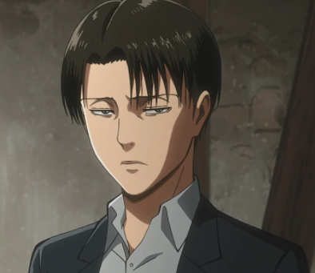
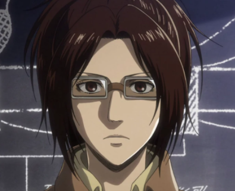
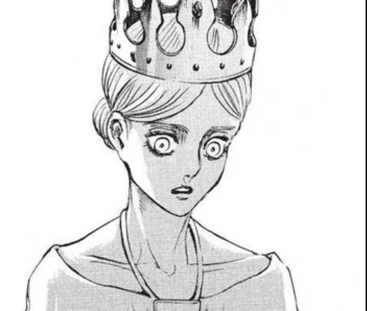

Ymir Fritz was the progenitor of the Eldians. When she was a young girl, she awakened the power of the Titans and became the first Titan, the Founding Titan. After she died, her spirit was split into the Nine Titans.
Erwin Smith
Erwin Smith was the 13th commander of the Scout Regiment. Discerning, intelligent, and widely respected, Erwin was an able commander. While he cared deeply for his men, he did not hesitate to sacrifice them for the good and prosperity of mankind, and his men have proven more than willing to stake their lives at his order. Erwin developed the Long-Distance Enemy Scouting Formation. Due to uncertainty about his future, he later named Hange Zoë as his successor.
Levi Ackermann

Levi Ackermann , often formally referred to as Captain Levi , is the squad captain of the Special Operations Squad within the Scout Regiment, and is said to be humanity's strongest soldier.
Hange Zoë

Hange Zoë is the 14th and current Commander of the Scout Regiment, formerly a section commander in charge of the Fourth Squad, until the death of the 13th Commander - Erwin Smith - who named Hange as his successor shortly before. Hange conducts research on Titans to the point of being obsessed with them. As a result, they are deeply interested in Eren Jaeger and his ability to transform into a Titan.
Jean Kirschtein
Jean Kirschtein is a graduate of the 104th Cadet Corps, among whom he ranked the 6th best. Jean hails from Wall Rose's Trost District, and joined the military with hopes of living a peaceful life within the walls as part of the Military Police Regiment, but would later find himself joining the Scout Regiment.
Conny Springer
Conny Springer a graduate of 104th Cadet Corps, he was ranked 8th out of the top 10. He is a member of the Scout Regiment.
Sasha Braus
Sasha Braus was a member of the Scout Regiment and one of the few former members of the 104th Cadet Corps, of which she was ranked 9th out of the top 10. A compulsive food hoarder with an overly polite way of speech, Sasha originated from Dauper, a village in the southern territory of Wall Rose.
Historia Reiss

Historia Reiss is the current Queen of the Walls. She is also the illegitimate child of the nobleman Rod Reiss and is the last remaining member of the Reiss royal family. She was raised in isolation on one of the Reiss family estates until the fall of Wall Maria. Shortly after, her mother was murdered in front of her, and Historia was coerced into renouncing her name and claim to the Reiss heritage, taking on the new identity of Krista Lenz, and entering military service, which was expected to result in her death. She eventually reclaimed her true name, becoming an important asset to the Corps and ascending to the throne after the success of the revolution against the government.